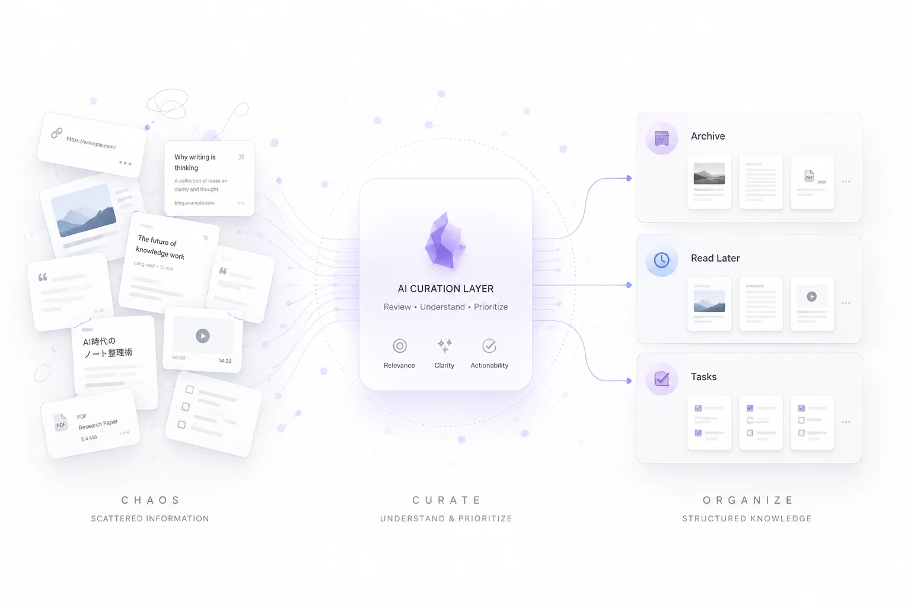

Collect. Review. Organize.
Inbox Curatorは、Obsidianに集まる未整理ノートをAIでレビューし、読むべきもの・保管すべきもの・タスク化すべきものに自動で仕分けるプラグインです。
ブラウザから記事を保存する場合は、Obsidianのクリップ系拡張機能と組み合わせると、「保存 → レビュー → 整理」までの流れをよりスムーズにできます。

自動整理を使う前に、まずは1〜2件のノートでテストしてください。フォルダ設定、レビュー結果、移動先が意図通りか確認してから本格運用するのがおすすめです。
| キー | 動作 |
|---|---|
| Tab | フォーカスの移動 |
| Space / Enter | アコーディオンの開閉 / タブ選択 / ボタン押下 |
| ← / → | カテゴリタブのフォーカス切り替え（選択時に自動実行） |
| Home / End | 最初 / 最後のカテゴリタブへ移動 |
| Enter (検索欄内) | 現在ヒットしている最初のFAQ質問にフォーカスを移動 |